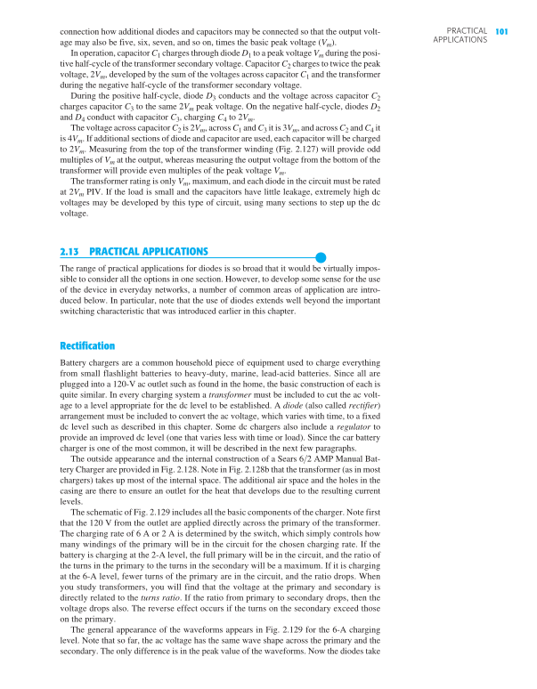

101PRACTICAL APPLICATIONSconnection how additional diodes and capacitors may be connected so that the output volt-age may also be five, six, seven, and so on, times the basic peak voltage ( V m ). In operation, capacitor C 1 charges through diode D 1 to a peak voltage V m during the posi-tive half-cycle of the transformer secondary voltage. Capacitor C 2 charges to twice the peak voltage, 2 V m , developed by the sum of the voltages across capacitor C 1 and the transformer during the negative half-cycle of the transformer secondary voltage. During the positive half-cycle, diode D 3 conducts and the voltage across capacitor C 2 charges capacitor C 3 to the same 2 V m peak voltage. On the negative half-cycle, diodes D 2 and D 4 conduct with capacitor C 3 , charging C 4 to 2 V m . The voltage across capacitor C 2 is 2 V m , across C 1 and C 3 it is 3 V m , and across C 2 and C 4 it is 4 V m . If additional sections of diode and capacitor are used, each capacitor will be charged to 2 V m . Measuring from the top of the transformer winding ( Fig. 2.127 ) will provide odd multiples of V m at the output, whereas measuring the output voltage from the bottom of the transformer will provide even multiples of the peak voltage V m . The transformer rating is only V m , maximum, and each diode in the circuit must be rated at 2 V m PIV. If the load is small and the capacitors have little leakage, extremely high dc voltages may be developed by this type of circuit, using many sections to step up the dc voltage. 2.13 PRACTICAL APPLICATIONS ● The range of practical applications for diodes is so broad that it would be virtually impos-sible to consider all the options in one section. However, to develop some sense for the use of the device in everyday networks, a number of common areas of application are intro-duced below. In particular, note that the use of diodes extends well beyond the important switching characteristic that was introduced earlier in this chapter. Rectification Battery chargers are a common household piece of equipment used to charge everything from small flashlight batteries to heavy-duty, marine, lead-acid batteries. Since all are plugged into a 120-V ac outlet such as found in the home, the basic construction of each is quite similar. In every charging system a transformer must be included to cut the ac volt-age to a level appropriate for the dc level to be established. A diode (also called rectifier ) arrangement must be included to convert the ac voltage, which varies with time, to a fixed dc level such as described in this chapter. Some dc chargers also include a regulator to provide an improved dc level (one that varies less with time or load). Since the car battery charger is one of the most common, it will be described in the next few paragraphs. The outside appearance and the internal construction of a Sears 6>2 AMP Manual Bat-tery Charger are provided in Fig. 2.128 . Note in Fig. 2.128b that the transformer (as in most chargers) takes up most of the internal space. The additional air space and the holes in the casing are there to ensure an outlet for the heat that develops due to the resulting current levels. The schematic of Fig. 2.129 includes all the basic components of the charger. Note first that the 120 V from the outlet are applied directly across the primary of the transformer. The charging rate of 6 A or 2 A is determined by the switch, which simply controls how many windings of the primary will be in the circuit for the chosen charging rate. If the battery is charging at the 2-A level, the full primary will be in the circuit, and the ratio of the turns in the primary to the turns in the secondary will be a maximum. If it is charging at the 6-A level, fewer turns of the primary are in the circuit, and the ratio drops. When you study transformers, you will find that the voltage at the primary and secondary is directly related to the turns ratio . If the ratio from primary to secondary drops, then the voltage drops also. The reverse effect occurs if the turns on the secondary exceed those on the primary. The general appearance of the waveforms appears in Fig. 2.129 for the 6-A charging level. Note that so far, the ac voltage has the same wave shape across the primary and the secondary. The only difference is in the peak value of the waveforms. Now the diodes take